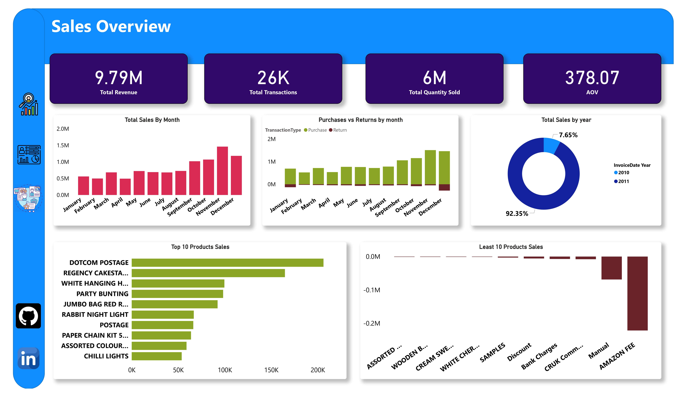

توقف عن التخمين، وابدأ في اتخاذ قرارات رابحة.
هل لديك بيانات كثيرة ولكن لا توجد رؤى واضحة؟ سأبني لك لوحة بيانات Power BI مخصصة تجيب على أهم أسئلتك وتضع عملك على مسار النمو.
احجز استشارتك الاستراتيجية المجانية جلسة مجانية 100%، بدون أي التزامات.هل هذا هو وضعك الحالي؟
تقارير إكسل لا تنتهي وتستهلك ساعات من وقتك.
ضياع الوقت في جمع البيانات بدلاً من تحليلها.
عدم الثقة في دقة الأرقام التي تنظر إليها.
صعوبة في مشاركة الرؤى مع فريق عملك.
تخيل هذا بدلاً من ذلك...

لوحة بيانات تفاعلية واحدة تجيب على كل أسئلتك في 30 ثانية.
ماذا ستحصل عليه بالضبط؟
وضوح فوري
فهم كامل لأداء عملك من خلال مؤشرات أداء رئيسية واضحة ومصممة خصيصًا لك.
توفير هائل للوقت
تحديثات تلقائية للبيانات تنهي عصر التقارير اليدوية وتوفر لك ساعات ثمينة كل أسبوع.
قرارات مبنية على حقائق
الثقة الكاملة لاتخاذ القرارات الصحيحة في الوقت المناسب بناءً على بيانات دقيقة وموثوقة.

"والله محترم ومميز.. تأخرت عليه في التسليم ومع ذلك كان في غاية الاحترام والتعاون. شاكر لك يا أ.عمر وبإذن الله ما يكون آخر تعامل."عبدالملك آل فريان
رئيس مركز خدمات المانحين، مؤسسة سليمان الراجحي الخيرية
احجز استشارتك الاستراتيجية المجانية الآن
في هذه الجلسة (30 دقيقة)، سنقوم بـ:
1. مناقشة أهداف عملك. 2. تحديد أهم التحديات. 3. وضع خريطة طريق أولية لكيفية مساعدة البيانات لك.